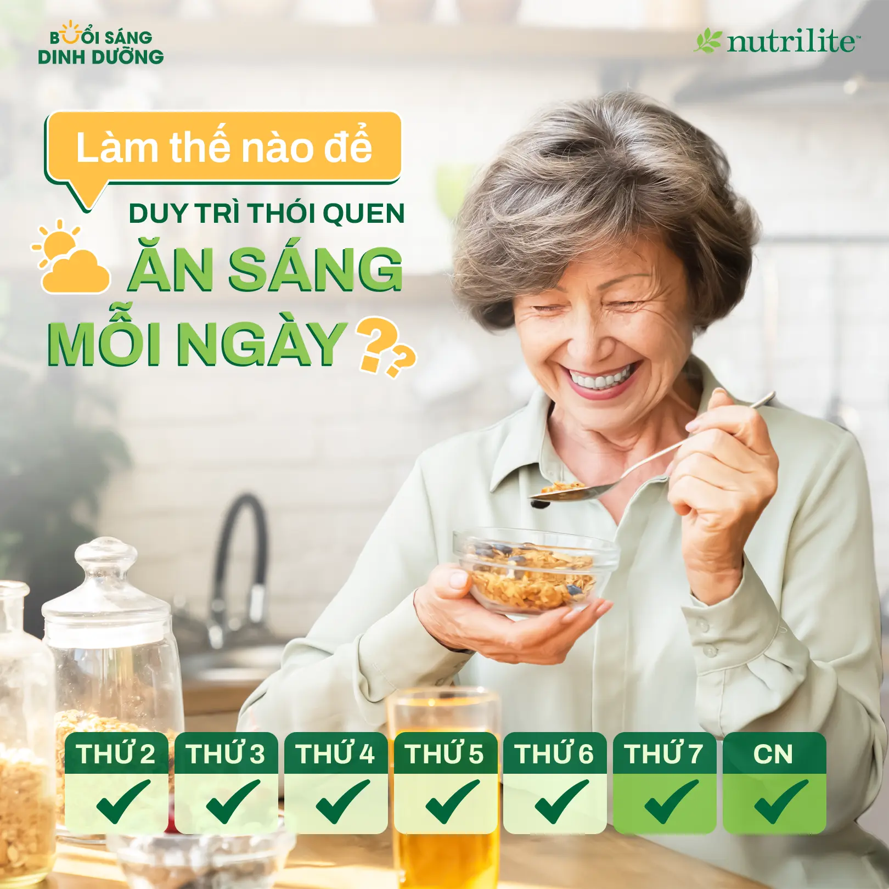
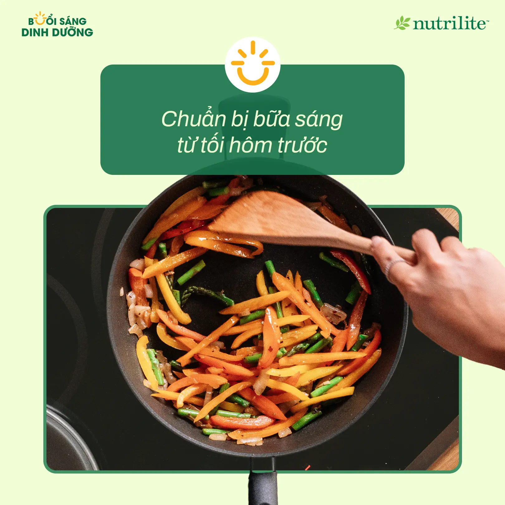
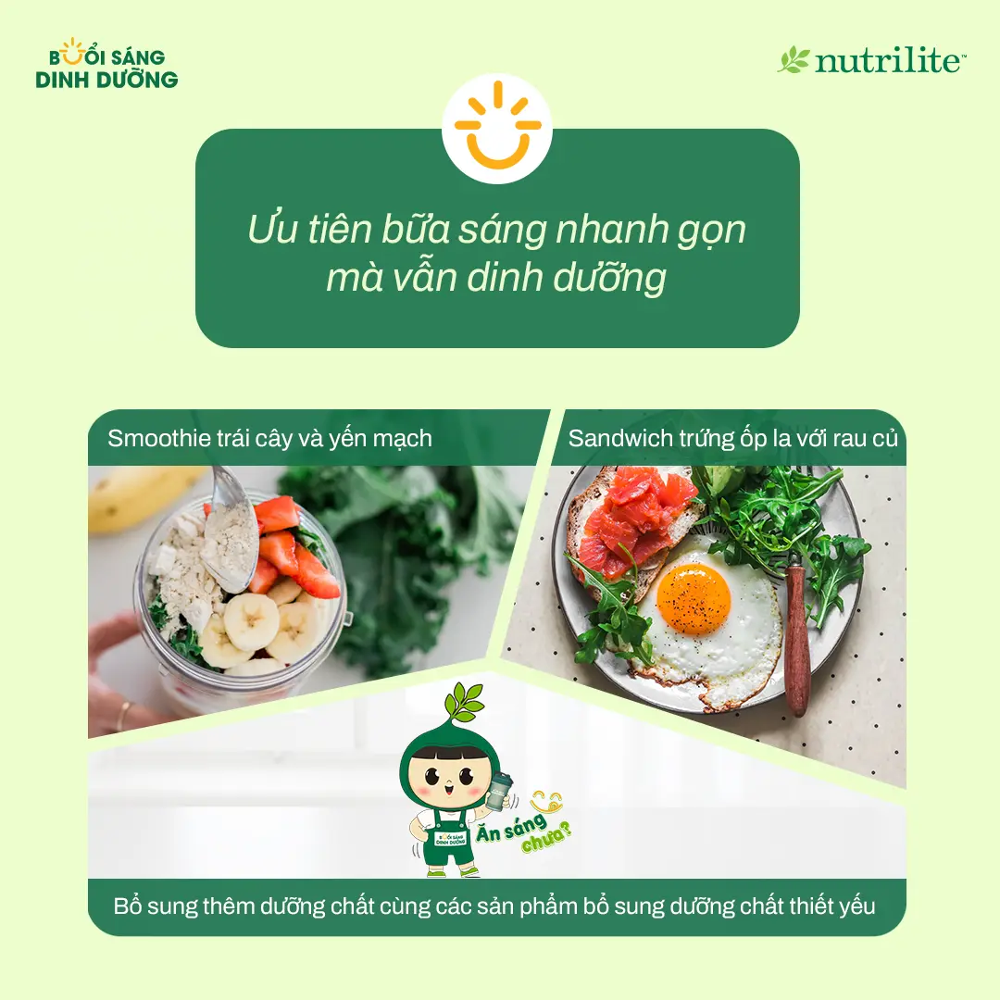
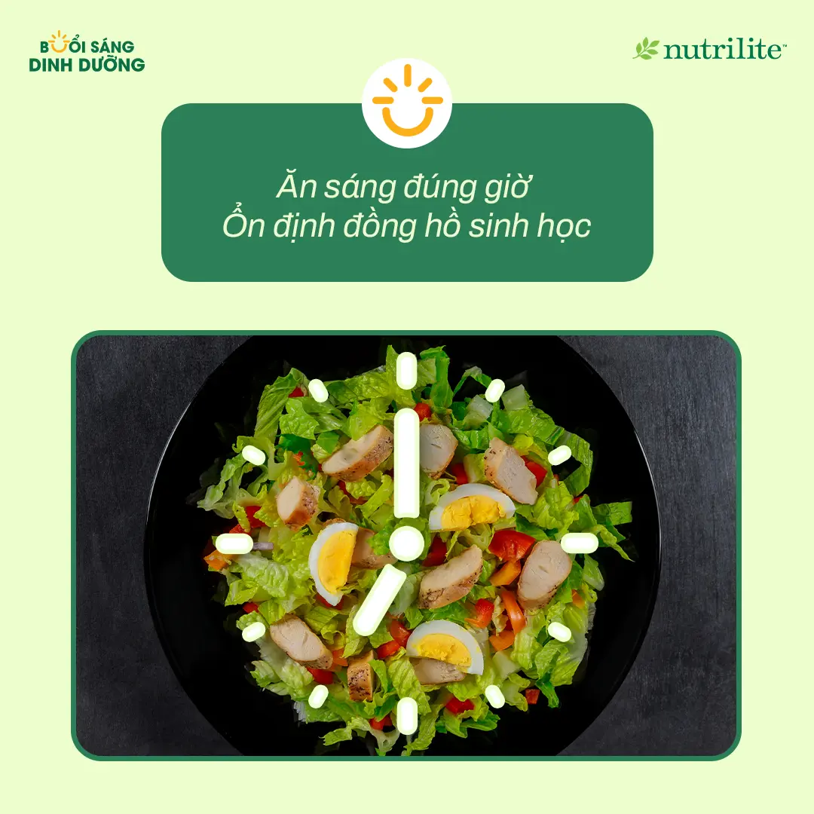
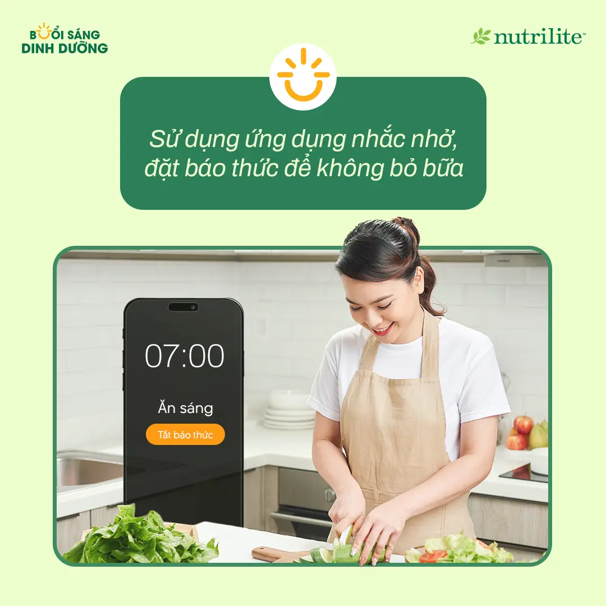

Làm Thế Nào Để Duy Trì Thói Quen Ăn Sáng Mỗi Ngày?
Vậy làm sao để duy trì bữa sáng đều đặn? Hãy áp dụng ngay những tip sau nhé!
- ✅ Chuẩn bị bữa sáng từ tối hôm trước: Lên sẵn thực đơn và sơ chế nguyên liệu giúp bạn tiết kiệm thời gian. Yến mạch ngâm, trái cây cắt sẵn hay sữa chua là những lựa chọn nhanh gọn và giàu dinh dưỡng.
- ✅ Chọn món ăn sáng nhanh chóng và bổ dưỡng: Nếu bạn quá bận rộn, hãy ưu tiên các món đơn giản, lành mạnh như smoothie trái cây với yến mạch, hoặc sandwich trứng ốp la với rau củ. Đừng quên bổ sung thêm dưỡng chất cần thiết từ các sản phẩm của Nutrilite để đảm bảo đầy đủ năng lượng mỗi sáng.
- ✅ Ăn sáng đúng giờ: Ăn vào khung giờ cố định mỗi ngày giúp cơ thể duy trì đồng hồ sinh học ổn định, hỗ trợ hấp thu dinh dưỡng tốt hơn.
- ✅ Ứng dụng công nghệ: Đặt báo thức, dùng app nhắc nhở hoặc theo dõi dinh dưỡng để không bỏ bữa sáng.
Bạn hãy bắt đầu ngay hôm nay với những thay đổi nhỏ để duy trì thói quen ăn sáng mỗi ngày, nâng cao sức khỏe và tràn đầy năng lượng nhé!





Nguồn: